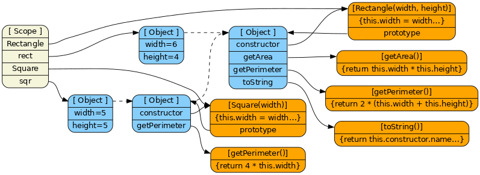
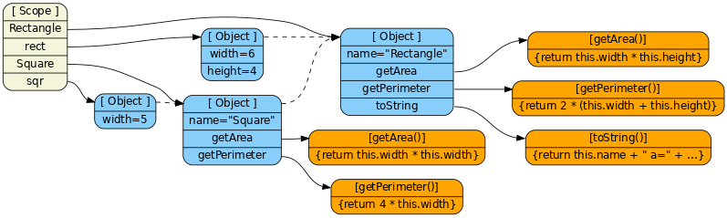
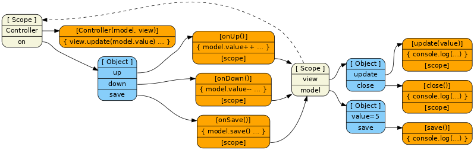

Learning Javascript with Object Graphs (Part II)
HEADS UP! This article was written for an older version of node. More up-to-date information may be available elsewhere.
The first article using graphs to describe JavaScript semantics was so popular that I've decided to try the technique with some more advanced ideas. In this article I'll explain three common techniques for creating objects. They are constructor with prototype, pure prototypal, and object factory.
My goal is that this will help people understand the strengths and weaknesses of each technique and understand what's really going on.
Classical JavaScript Constructors
First let's create a simple constructor function with a prototype. This is the closest thing to a class you're going to find in native JavaScript. It's extremely powerful and efficient, but doesn't quite work like you would expect if coming from a language with classes.
function Rectangle(width, height) {
this.width = width;
this.height = height;
}
Rectangle.prototype.getArea = function getArea() {
return this.width * this.height;
};
Rectangle.prototype.getPerimeter = function getPerimeter() {
return 2 * (this.width + this.height);
};
Rectangle.prototype.toString = function toString() {
return this.constructor.name + " a=" + this.getArea() + " p=" + this.getPerimeter();
};Now let's define a new class of objects called Squares that inherit from Rectangles. To do inheritance, the constructor's prototype has to inherit from the parent constructor's prototype. Here we're overriding getPerimeter to make it slightly more efficient and to show how to override functions.
function Square(side) {
this.width = side;
this.height = side;
}
// Make Square inherit from Rectangle
Square.prototype = Object.create(Rectangle.prototype, { constructor: { value: Square } });
// Override a method
Square.prototype.getPerimeter = function getPerimeter() {
return this.width * 4;
};Usage is straightforward. Just create an instance of each and call a function on each.
var rect = new Rectangle(6, 4);
var sqr = new Square(5);
console.log(rect.toString())
console.log(sqr.toString())This is the resulting data structure. Dashed lines mean object inheritance.

Notice that there is little difference between the rect instance and Square.prototype. They are both simply objects that inherit from Rectangle.prototype. JavaScript is just a series of linked objects when you get down to it. The only objects that are special are functions in that they take parameters and can hold executable code and point to scopes.
Pure Prototypal Objects
Let's do the same example, but without using constructor functions. This time we'll just use plain prototypal inheritance.
Let's define a Rectangle prototype that the base pattern for all our objects.
var Rectangle = {
name: "Rectangle",
getArea: function getArea() {
return this.width * this.height;
},
getPerimeter: function getPerimeter() {
return 2 * (this.width + this.height);
},
toString: function toString() {
return this.name + " a=" + this.getArea() + " p=" + this.getPerimeter();
}
};Now let's define a sub-object called Square that overrides some of the properties to change the behavior.
var Square = Object.create(Rectangle);
Square.name = "Square";
Square.getArea = function getArea() {
return this.width * this.width;
};
Square.getPerimeter = function getPerimeter() {
return this.width * 4;
};To create actual instances of these prototypes, we simply create new objects that inherit from the prototype objects and then set their local state manually.
var rect = Object.create(Rectangle);
rect.width = 6;
rect.height = 4;
var square = Object.create(Square);
square.width = 5;
console.log(rect.toString());
console.log(square.toString());Here is the resultant graph of objects.

This isn't quite as powerful as the constructor + prototype method, but is often much easier to understand since there is less indirection. Also if you come from a language that has pure prototypal inheritance, you'll be happy to know it's possible in JavaScript too.
Object Factories
One of my favorite methods for creating objects is to use a factory function. The difference is that instead of defining a prototype object with all my shared functions and then creating instances of those, I simply call a function that returns a new object every time.
This example is a super simple MVC system. The controller function takes in as parameters the model and view objects and outputs a new controller object. All state is stored in the closure via the scope.
function Controller(model, view) {
view.update(model.value);
return {
up: function onUp(evt) {
model.value++;
view.update(model.value);
},
down: function onDown(evt) {
model.value--;
view.update(model.value);
},
save: function onSave(evt) {
model.save();
view.close();
}
};
}To use this, simply call the function with the desired parameters. Notice how we can use these directly as event handlers (setTimeout) without having to first bind the function to the object. Since it (the function) doesn't use this internally, there is no need to mess with the value of this.
var on = Controller(
// Inline a mock model
{
value: 5,
save: function save() {
console.log("Saving value " + this.value + " somewhere");
}
},
// Inline a mock view
{
update: function update(newValue) {
console.log("View now has " + newValue);
},
close: function close() {
console.log("Now hiding view");
}
}
);
setTimeout(on.up, 100);
setTimeout(on.down, 200);
setTimeout(on.save, 300);// Output
View now has 5
View now has 6
View now has 5
Saving value 5 somewhere
Now hiding view
Here is the object graph that results from this code. Notice that we have access to the two passed in anonymous objects via the hidden [scope] property of the functions. Or in other words, we have access to model and view from the closure created by the factory function.

Conclusion
There is so much more I want to explore, but I like to keep these articles somewhat short and bite-size. If there is demand, I'll write a part three explaining how to do ruby-style mixins and other advanced topics.
View the discussion thread.blog comments powered byDisqus